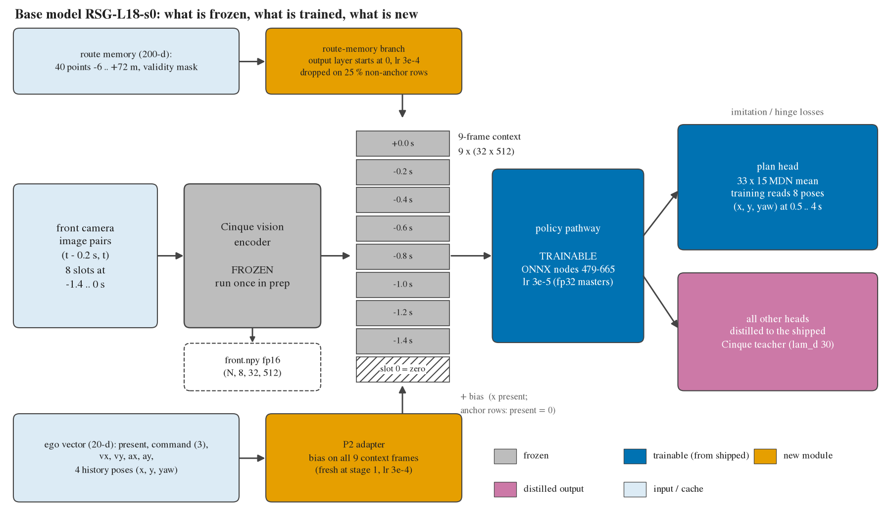
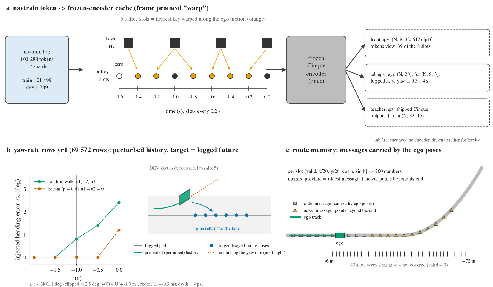
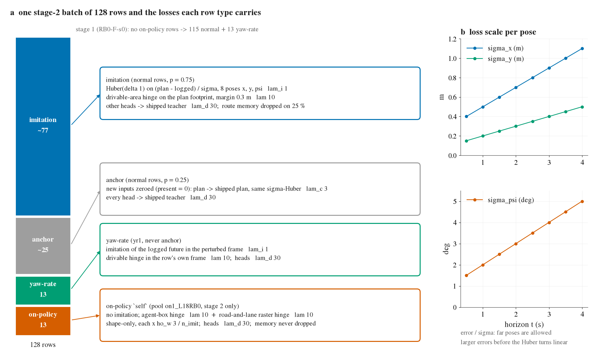
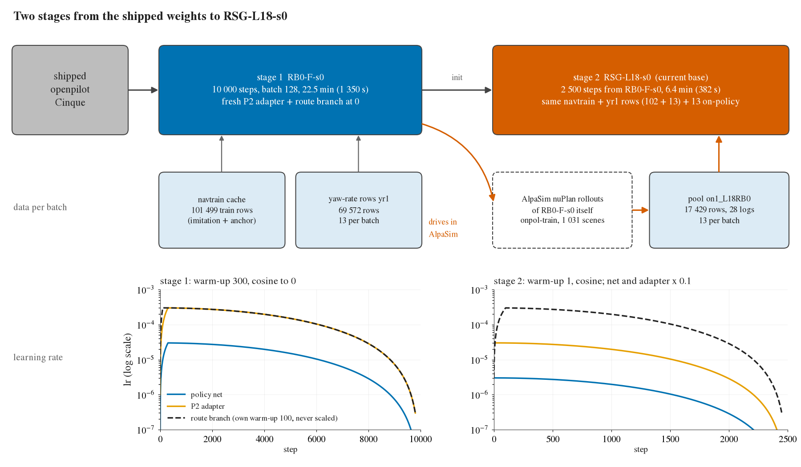

RSG-L18-s0 是两段训出来的：第一段 RB0-F-s0 从出厂 openpilot Cinque 权重起，在 navtrain 上训 10 000 步（加偏航率扰动行、新的 P2 适配器和路线记忆支路）；第二段从 RB0 续训 2 500 步，学习率降到 0.1 倍，每个 batch 再混入 13 行 RB0 自己在 AlpaSim nuPlan 里开出来的状态，这些行只有约束、没有模仿目标。视觉编码器全程冻结，只训策略通路和新模块；其余输出头一律蒸馏回出厂模型。下面四张图依次讲模型、预处理、一个 batch 的损失、两段训练。




--lr-scale 影响，仍以 3e-4 为峰值、自带 100 步 warm-up、走同一条余弦（不是常数）。| 参数 | 第一段 RB0-F-s0 | 第二段 RSG-L18-s0 |
|---|---|---|
| 起点 | 出厂 Cinque 权重 + 新 P2 适配器 + 路线支路（输出层为 0） | --init RB0-F-s0 |
| 步数 / batch | 10 000 / 128 | 2 500 / 128 |
| 学习率（策略 / 适配器 / 路线支路） | 3e-5 / 3e-4 / 3e-4 | 3e-6 / 3e-5 / 3e-4（--lr-scale 0.1 不作用于支路） |
| warm-up 与调度 | 300 步（支路 100 步），余弦到 0；AdamW wd 0.01 | 1 步（支路 100 步），余弦到 0；AdamW wd 0.01 |
| batch 组成 | 115 普通 + 13 偏航率 | 102 普通 + 13 偏航率 + 13 on-policy（--on on1_L18RB0 --on-k 13 --on-mode self） |
| 损失权重 | 模仿 λ 1；锚定 λ 3；蒸馏 λ 30；可行驶 hinge λ 10、余量 0.3 m（模仿行与偏航率行）；on-policy 行 agent hinge λ 10 + 道路栅格 hinge λ 10，只作用于形状，× ho_w 3 / n_imit；路线输入在 25 % 非锚定行上置零（on-policy 行不置零） | |
| 验证间隔 / 用时 | 每 1 000 步 / 1 350 s | 每 500 步 / 382 s |
| 数据 | navtrain 103 288 个 token（12 个分片），划分 navsim/op-parity-full：训练 101 499、dev 1 789；偏航率行 yr1 69 572；on-policy 池 on1_L18RB0 17 429 行（28 个 log） | |
--yr-mass 0.1 --label-bank --agent-lam 10 --agent-on-only --shape --ho-w 3 --rm-lr 3e-4 --seed 0。第一段没有池，按 rm_train.py 的规则 --agent-on-only 不带 --on 等于 agent hinge 关闭。experiments/op_parity/scripts/pp_train.py：Cfg、σ 定义、Losses.dist 与总损失experiments/op_parity/scripts/pp_prep.py：缓存文件与帧协议；jevdrive/op_interp.py：关键帧时刻与最近关键帧 warpexperiments/alpasim/scripts/joint_train.py、ot3_rows.py：偏航率行与 batch 组成experiments/onpol_nuplan/scripts/on_train.py：--init、on-policy 行与 self 模式experiments/route_mem/scripts/rm_train.py、lib/rmem.py、README.md：路线支路、学习率分组与置零规则lib/parity_adapter.py：ego_features（20 维）；jevdrive/op_adapt.py：视觉 / 策略分解experiments/route_follow/README.md、research/next-round/route-night.md：RB0 与 RSG 的来历research/base-recipe/figs/make_figs.py